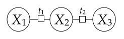

What courses should you take in a given quarter? Answering this question requires balancing your interests, satisfying prerequisite chains, graduation requirements, availability of courses; this can be a complex tedious process. In this assignment, you will write a program that does automatic course scheduling for you based on your preferences and constraints. The program will cast the course scheduling problem (CSP) as a constraint satisfaction problem (CSP) and then use backtracking search to solve that CSP to give you your optimal course schedule.
You will first get yourself familiar with CSP by doing warmup exercises in Problem 0. In Problem 1, you will implement two of the three heuristics you learned from the lectures that will make CSP solving much faster. In problem 2, you will add a helper function to reduce $n$-ary potentials to unary and binary potentials. Lastly, in Problem 3, you will create the course scheduling CSP and solve it using the code from previous parts.
Your goal is to turn on all the light bulbs by pressing a subset of the buttons. Construct a CSP to solve this problem. Your CSP should have $m$ variables and $n$ constraints. For this problem only, you can use $n$-ary constraints. Describe your CSP precisely and concisely.

where $X_1,X_2,X_3 \in \{0,1\}$ and $t_1, t_2$ are XOR functions (that is $t_1(X) = x_1 \bigoplus x_2$ and $t_2(X) = x_2 \bigoplus x_3$).backtrack() be called
if we use the fixed ordering $X_1,X_2,X_3$? What if the ordering is $X_1,X_3,X_2$?
(You should use the Backtrack algorithm from the slides.
The initial arguments are $x=\emptyset$, $w=1$, and the original Domain.)
In the code, this will be BacktrackingSearch.numOperations.
create_chain_csp() by creating a generic chain CSP with XOR as potentials.
Note: We've provided you with a CSP implementation
in util.py which supports unary and binary potentials. For
now, you don't need to understand the implementation, but please read the
comments and get yourself familiar with the CSP interface. For this
problem, you'll need to use CSP.add_variable() and
CSP.add_binary_potential().
So far, we've only worked with unweighted CSPs, where $f_j(x)\in\{0,1\}$. In this problem, we will work with weighted CSPs, which associates a weight for each assignment $x$ based on the product of $m$ potential functions $f_1, \dots, f_m$: $$\text{Weight}(x) = \prod^m_{j=1}f_j(x)$$ where each potential $f_j(x)\geq 0$. Our goal is to find the assignment(s) $x$ with the highest weight. As in problem 0, we will assume that each potential is either a unary potential (depends on exactly one variable) or a binary potential (depends on exactly two variables).
For weighted CSP construction, you can refer to the CSP examples we provided
in util.py for guidance (create_map_coloring_csp() and
create_weighted_csp()).
You can try these examples out by running
python run_p1.py
Notice we are already able to solve the CSPs, because in submission.py,
a basic backtracking search is already implemented.
Recall that backtracking search operates over partial assignments
and associates each partial assignment with a weight, which is the product of all the potentials
that depend only on the assigned variables.
When we assign a value to a new variable $X_i$, we multiply in all the potentials
that depend only on $X_i$ and the previously assigned variables.
The function get_delta_weight() returns the contribution
of these new potentials based on the unaryPotentials and
binaryPotentials.
An important case is when get_delta_weight() returns 0.
In this case, any full assignment that extends the new partial assignment will also be zero,
so there is no need to search further with that new partial assignment.
Take a look at BacktrackingSearch.reset_results() to see the other fields
which are set as a result of solving the weighted CSP.
You should read submission.BacktrackingSearch carefully to make
sure that you understand how the backtracking search is working on the CSP.
create_nqueens_csp() by
adding $n$ variables and some number of binary potentials.
Note that the solver collects some basic
statistics on the performance of the algorithm. You should take advantage of
these statistics for debugging and analysis.
You should get 92 (optimal) assignments for
$n=8$ with exactly 2057 operations (number of calls to backtrack()).
Hint: If you get a larger number of operations, make sure your CSP is minimal.
get_delta_weight() on $X_j=a$ returns a non-zero value).
Implement this heuristic in
get_unassigned_variable() under the condition self.mcv = True.
It should take you exactly 1361 operations to find all optimal assignments for 8 queens CSP.
— that's 30% fewer!
Note:
in CSP and BacktrackingSearch we always use indices to represent variables
and their values.
While the variable name can be any hashable object (for example int, str or
tuple of hashable elements), there's a unique index associated with it in a given CSP.
For example, if we start with an empty CSP and add a variable 'Victoria', its index will be
0 as it's the first variable added. Given the index (0 for this case), you can
get the actual variable name by accessing csp.varNames[0] and get its domain by accessing
csp.valNames[0].
Similarly, a variable's value can be any object (not necessarily hashable) and there's also
a unique index associated with each value given a variable. Suppose the previous variable 'Victoria'
has three possible values ['red', 'green', 'blue'], the index for 'red' would be
0, the index for 'green' would be 1 and so on. Whenever you
see var (for a variable) and val (for a value) in the code, they almost always
are the indices, not names.
Why do we do this? This is done for efficiency as accessing arrays is faster than accessing hash tables. For example:
csp.varNames[var] gives you the variable namecsp.valNames[var][val] gives you the val-th variable valuecsp.unaryPotentials[var][val] gives the unary potential valuecsp.binaryPotentials[var1][var2][val1][val2] gives the binary potential valueBacktrackingSearch, assignment[var] gives the index of assigned valuevar1 and var2 are indices of variables and val1 and val2
are indices of their corresponding values.
backtrack() we've implemented code which copies and restores domains
for you. Your job is to fill in arc_consistency_check().
You should make sure that your existing MCV implementation is compatible with your AC-3 algorithm as we will be using all three heuristics together during grading. With AC-3 enabled, it should take you 769 operations only to find all optimal assignments to 8 queens CSP — That is almost 45% fewer even compared with MAC!
Take a deep breath! This part requires time and effort to implement — be patient.
Hint 1: documentation for CSP.add_unary_potential() and
CSP.add_binary_potential() can be helpful.
Hint 2: although AC-3 works
recursively, you may implement it iteratively. Using a queue might be a good idea.
So far, our CSP solver only handles unary and binary potentials, but for course scheduling (and really any non-trivial application), we would like to define potentials that involve more than two variables. It would be nice if we could have a general way of reducing $n$-ary constraint to unary and binary constraints. In this problem, we will do exactly that for two types of $n$-ary constraints.
Suppose we have boolean variables $X_1, X_2, X_3$, where $X_i$ represents whether the $i$-th course is taken.
Suppose we want to enforce the constraint that $Y = X_1 \vee X_2 \vee X_3$, that is,
$Y$ is a boolean representing whether at least one course has been taken.
In submission.py, the function get_or_variable() does such a reduction.
It takes in a list of variables and a target value, and returns a boolean variable with
domain [True, False] whose value is constrained to the condition of having
at least one of the variables assigned to the target value.
For example, we would call get_or_variable() with
arguments $(X_1,X_2,X_3,\text{True})$, which would return a new (auxiliary)
variable $X_4$, and then add another
constraint $[X_4=\text{True}]$.
The second type of $n$-ary potentials is constraints on the sum over $n$ variables. You are going to implement reduction of this type but let's first look at a simpler problem to get started:
Hint: draw inspiration from the example of enforcing $[X_i=1\ \text{for exactly one}\ i]$ which Percy did in the lecture.
get_sum_variable(),
which takes in a sequence of non-negative integer-valued variables
and returns a variable whose value is constrained to equal the sum of the variables.
You will need to access the domains of the variables passed in,
which you can assume contain only non-negative integers.
The parameter maxSum is the maximum sum possible of all the variables.
You can use this information to decide the proper domains for your auxiliary variables.
How do you use this? Suppose we wanted to enforce the constraint $[X_1 + X_2 + X_3 \le K]$.
We would call get_sum_variable() on $(X_1,X_2,X_3)$ to get some auxiliary
variable $Y$, and then add the constraint $[Y \le K]$.
In this problem, we will apply your weighted CSP solver to the problem of course
scheduling.
We have scraped a subset of courses that are offered this year from Stanford's
Bulletin. For each course in this dataset,
we have information on which quarters it is offered,
the prerequisites (which may not be fully accurate due to
ambiguity in the listing), and the range of units allowed.
You can take a look at all the courses in courses.json.
Please refer to
util.Course and util.CourseBulletin for more information.
To specify a desired course plan, you would need to provide a profile
which specifies your constraints and preferences for courses.
A profile is specified in a text file (see profile*.txt for examples).
The profile file has four sections.
The first section specifies a fixed minimum and maximum
(inclusive) number of units you need to take for each quarter. In the
second section, you register for the quarters that you want
to take your courses in. For example, register Aut2013 would sign you up for
this quarter. The quarters need not to be contiguous, but they must follow the
exact format XxxYYYY where Xxx is one of Spr, Sum, Aut, Win
and YYYY is the year.
The third section specifies the list of courses that you've taken in the
past and elsewhere using the taken keyword.
The the last section
is a list of courses that you would like to take during the registered quarters,
specified using request. Not every course listed in
request must appear in the generated schedule. Conversely, a list of
requests could potentially result in an infeasible schedule due to the
additional constraints we will discuss next.
To allow for more flexibility in your preferences, we allow some freedom to customize the requests. For instance, if you only want to take exclusively one of several courses but not sure which one, then specify:
request CS229 or CS229A or CS229T
Note that these courses do not necessarily have to be offered in the same quarter. The final schedule can have at most one of these three courses. Each course can only be requested at most once.
If you want to take a course in one of a specified set of quarters, use the
in modifier.
For example, if you want to take one of CS221 or CS229 in either Aut2013 or Sum2016, do:
request CS221 or CS229 in Aut2013,Sum2016Another operator you can apply is
after, which specifies
that a course must be taken after another one.
For example, if you want to choose one of CS221 or CS229 and take it after both CS109 and CS161, add:
request CS221 or CS229 after CS109,CS161Note that this implies that if you take CS221 or CS229, then you must take both CS109 and CS161. In this case, we say that CS109 and CS161 are
prereqs of this request.
(Note that there's no space after the comma.)
If you request
course A and B (separately), and A is an official prerequisite of B based on
the CourseBulletin,
we will automatically add A as a prerequisite for B; that is,
typing request B is equivalent to request B after A.
Note that if B is a prerequisite of A, to request A,
you must either request B or declare you've taken B before.
Finally, the last operator you can add is weight, which adds
non-negative weight to each request. All requests have a default weight value of 1.
Requests with higher weight should be preferred by your
CSP solver. Note that you can combine all of the aforementioned operators into
one as follows (again, no space after comma):
request CS221 or CS229 in Win2014,Win2015 after CS131 weight 5In the code, we use the
Request class to represent the requests.
For example, the request above will be parsed to a Request object
with the following properties:
cids of value ['CS221', 'CS229']quarters of value ['Win2014', 'Win2015']prereqs of value ['CS131']weight of value 5.0
It's important to note that a request does not have to be fulfilled,
but if it is,
the constraints specified by the various operators after,in must
also be satisfied.
You shall not worry about parsing the profiles because
we have done all the parsing of the bulletin and profile for you,
so all you need to work with is the collection of Request
objects in Profile and CourseBulletin
to know when courses are offered and the number of units of courses.
import util
# load bulletin
bulletin = util.CourseBulletin('courses.json')
# retrieve information of CS221
cs221 = bulletin.courses['CS221']
print cs221
# look at various properties of the course
print cs221.cid
print cs221.minUnits
print cs221.maxUnits
print cs221.prereqs # the prerequisites
print cs221.is_offered_in('Aut2014')
print cs221.is_offered_in('Win2015')
# load profile from profile_example.txt
profile = util.Profile(bulletin, 'profile_example.txt')
# see what it's about
profile.print_info()
# iterate over the requests and print out the properties
for req in profile.requests:
print req.cids, req.quarters, req.prereqs, req.weight
Your task is to take a profile and bulletin and construct a CSP.
We have started you off with code in SchedulingCSPConstructor
that constructs the core variables of the CSP as well as some basic constraints.
The variables are all pairs of requests and registered quarters (request, quarter),
and the value of such a variable is one of the course IDs in that Request
or None, which indicates none of the courses should be taken in that
quarter. We will add auxiliary variables later.
We have also implemented some basic constraints:
add_bulletin_constraints(), which enforces that a course can only be
taken if it's offered in that quarter (according to the bulletin), and
add_norepeating_contstraints(),
which constrains that no course can be taken more than once.
You should take a look at add_bulletin_constraints() and
add_norepeating_contstraints() to get a basic understanding
how the CSP for scheduling is represented. Nevertheless, we'll highlight
some important details to make it easier for you to implement:
(req, quarter)
where req is a Request object
(like the one shown above)
and quarter is a str representing a quarter
(e.g. 'Aut2013'). For detail please look at
SchedulingCSPConstructor.add_variables().
req is the course IDs of the request
plus None (e.g. ['CS221',
'CS229', None]).
When req is
None, this means no course is scheduled.
Always remember to check if req is
None.
quarter is all possible quarters
(self.profile.quarters, e.g. ['Win2014', 'Win2015']).
cid, you can get the corresponding
Course object by self.bulletin.courses[cid].add_quarter_constraints(). This is when your
profile specifies which quarter(s) you want your requested courses to be taken in.
This does not saying that one of the courses must be taken,
but if it is, then it must be taken in any one of the specified quarters.
Also note that this constraint will apply to all courses in that request.
We have written a verify_schedule()
function in grader.py that determines if your schedule satisfies all
of the given constraints. Note that since we are not dealing with units yet, it
will print None for the number of units of each course.
add_request_weights(). By default, all requests have a weight of 1
regardless whether it's satisfied or not. When a weight is explicitly specified,
it should only contribute to the final
weight if one of the requested courses is in the solution.
NOTE: Each grader test only tests the function you are asked to
implement. To test your CSP with multiple constraints you can use
run_p3.py and changing the constraints that you want to add.
add_unit_constraints().
You must ensure that the sum of units per quarter for your schedule are within
the min and max threshold inclusive.
You should use get_sum_variable().
In order for our solution extractor to
obtain the number of units, for every course,
you must add a variable (courseId, quarter)
to the CSP taking on a value equal to the number of units being taken for that
course during that quarter. When the course is not taken during that quarter,
the unit should be 0.
Hint: If your code times out, your maxSum passed
to get_sum_variable() might be too large.
profile.txt and then run the course scheduler:
python run_p3.py profile.txtYou might want to turn on the appropriate heuristic flags to speed up the computation. Does it produce a reasonable course schedule? Please submit your
profile.txt; we're curious how it worked out for you!
Want more challenges about CSP? Here we go. :D
Suppose we have a weighted CSP with variables $X_1, \dots, X_n$ with domains $\text{Domain}_i = \{ 1, \dots, K \}$. We have a set of basic potentials which depend only on adjacent pairs of variables in the same way: there is some function $g$ such that $f_i(x) = g(x_i, x_{i+1})$ for $i = 1, \dots, n-1$. In addition, we have a small set of notable patterns $P$, where each $p \in P$ is a sequence of elements from the domain.
Let $n_p$ be the number of times that $p$ occurs in an assignment $x = (x_1, \dots, x_n)$ as a consecutive sequence. Define the weight of an assignment $x$ to be $\displaystyle \prod_{i=1}^{n-1} f_i(x) \prod_{p \in P} \gamma^{n_p}.$ Intuitively, we multiply the weight by $\gamma$ every time a notable pattern appears.
For example, suppose $n = 4$, $\gamma = 3$, $g(a, b) = 2[a = b] + 1[a \neq b]$ and $P = \{ [1, 3, 3], [1, 2, 3] \}$. Then the assignment $x = [1, 3, 3, 2]$ has weight $2 \cdot 3 = 6$.